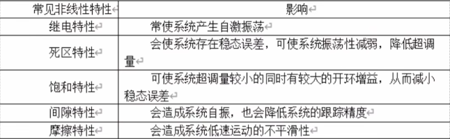
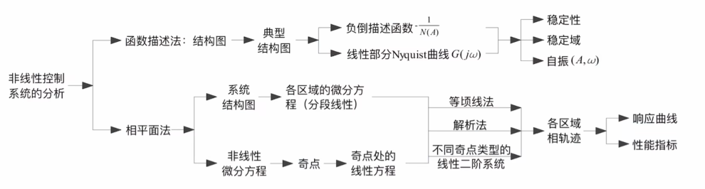
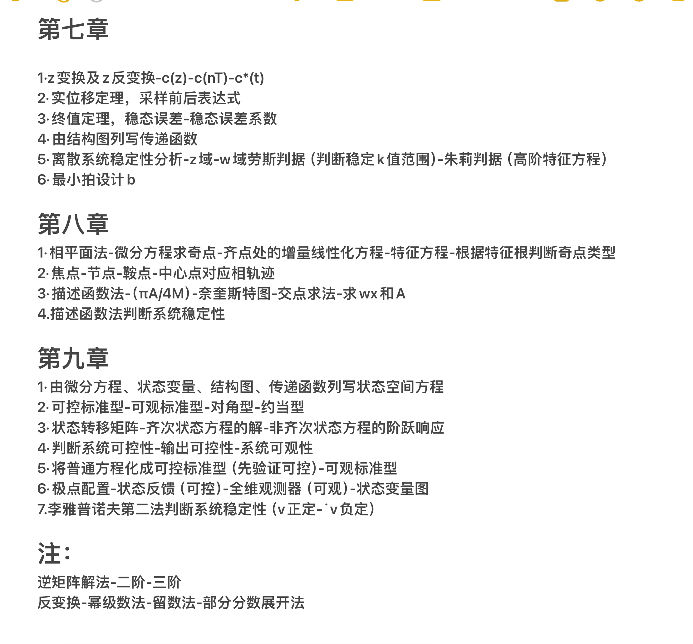
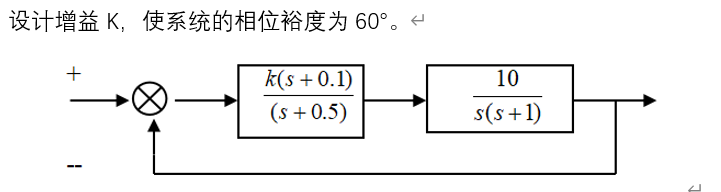
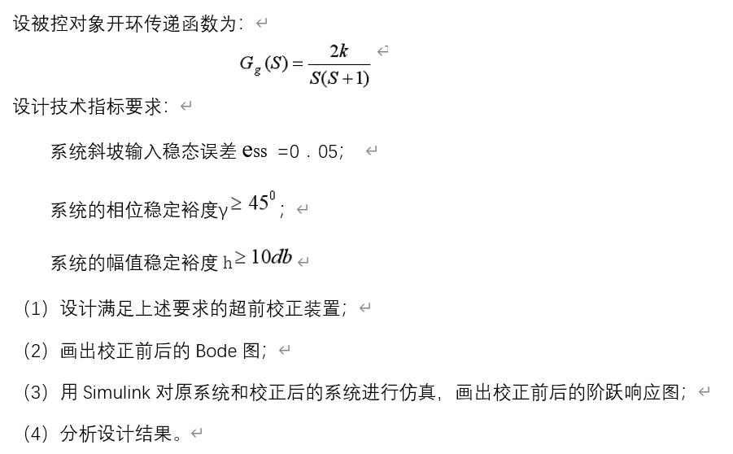
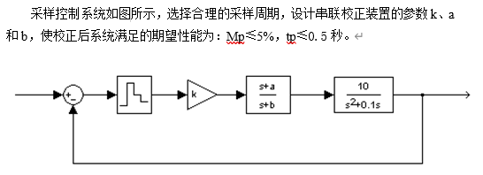
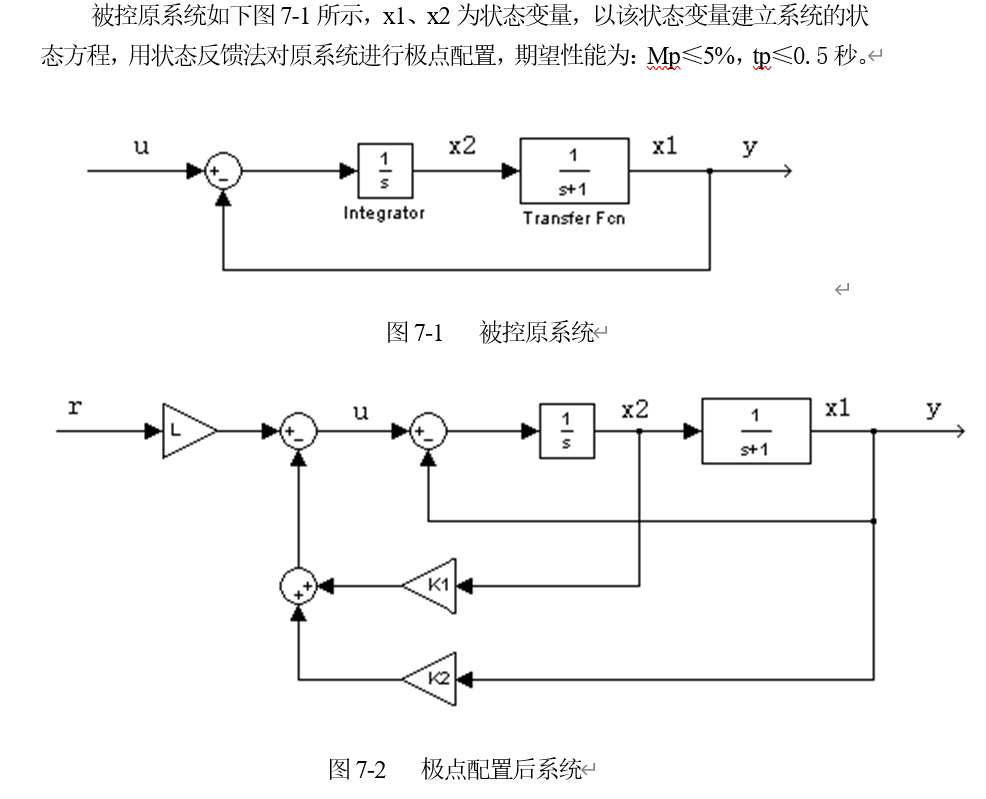
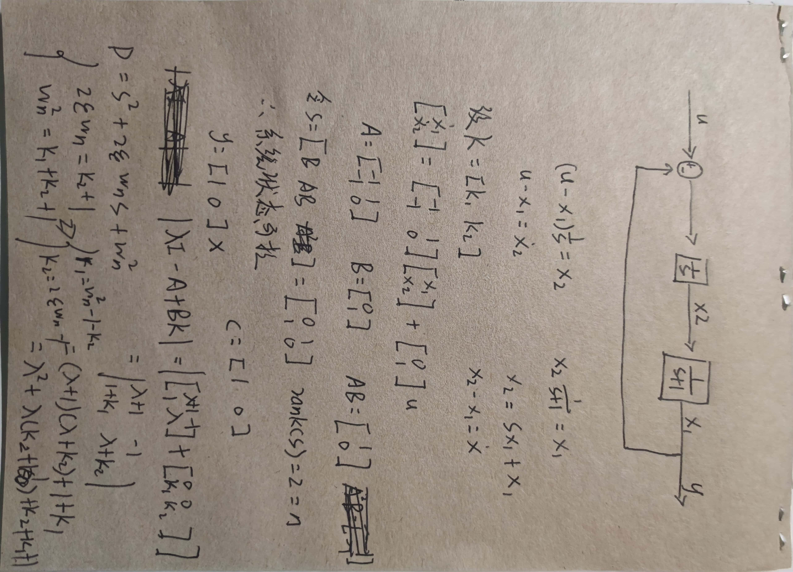
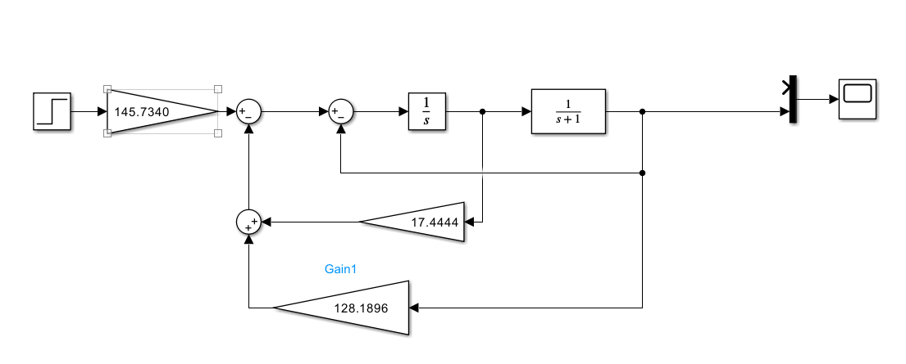
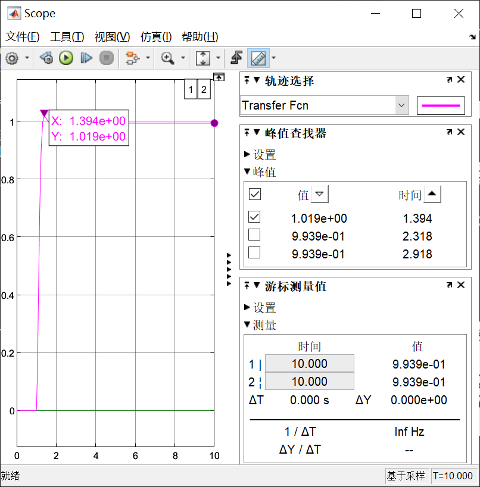

理论|自动控制原理
信号与系统
“信号与系统”课程涵盖信号的分类与特性、系统的基本概念与分类、时域与频域分析方法（如卷积、傅里叶变换、拉普拉斯变换和Z变换）、滤波器设计、采样定理以及调制与解调技术。它旨在帮助学生理解和分析各种信号与系统，应用数学工具进行分析与设计，并解决实际工程问题中的信号处理和系统设计挑战，是电子信息类专业的核心基础课程。
傅里叶
傅里叶变换，将一个时间域信号$f(t)$转换为频率域信号$F(ω)$:
逆傅里叶变换，将频率域信号$F(ω)$ 转换回时间域信号$f(t)$：
拉普拉斯变换
实际上是傅里叶变换的普适化版本，在傅里叶的基础上
卷积
卷积（Convolution）是数学、信号处理和计算机科学中的一种运算，其数学定义如下：
- $f(t)$可以理解为描述个体状态随时间变化的函数，不涉及空间的影响
- $g$可以理解为描述空间对个体状态某一个时间点的影响的函数，不随时间发生变化；
这是一个延迟、倍率、叠加的过程，卷积的的“卷”是融合，过去的响应会影响当下。
从数学意义上延申出来，在多个领域有应用，如图像处理的卷积核。
工具
频域：通常指的是通过傅里叶变换将时间域信号转换为频率成分的表示。
拉普拉斯变换：是一种积分变换，用于将一个时间域$f(t)$的函数转换到复频域$F(s)$。
拉普拉斯反变换：用于将频域的函数$F(s)$ 转换回时间域的函数$f(t)$。
自动控制原理
1932年，奈奎斯特基于复变函数理论建立根据频率响应判断反馈系统稳定性的原则，随后伯德等进一步完善，形成了频率响应法，1948年埃文斯提出根轨迹分析法，这两大理论的形成标志着经典控制理论的成熟。
描述控制系统的数学模型，就是描述系统输入、输出变量以及内部各变量之间关系的数学表达式：
- 时域中有：微分方程、差分方程和状态方程
- 复数域中有传递函数、结构图
- 频域中有频域特性
从微分方程到传递函数
在绘制控制系统时，通常使用复频域（拉普拉斯变换域）来表示，这是因为在复频域中，系统的动态行为可以通过传递函数（Transfer Function）来简洁地表示和分析。
传递函数的定义：输出的拉普拉斯变换与输入的拉普拉斯变换之比： - 开环传递函数
- 闭环传递函数
梅逊公式
依此可快速根据一个系统的方框图列出其闭环传递函数。线性系统的时域分析法
劳斯判据
在线性系统中，劳斯（$Routh$）判据主要用于判断系统的稳定性。如果系统不稳定，此判据并不能直接指出使得系统稳定的方法。
列出劳斯表，如其第一列全部大于零，则系统稳定，反之不稳定。线性系统的频域分析法
频率特性：又称频率响应，以正弦信号作为输出信号，当系统稳定后，其输出就称为频率响应。
现代控制理论
现代控制理论以状态变量概念为基础，利用现代数学方法和计算机来分析、综合复杂控制系统的新理论，适用于多输入、多输出、时变的、非线性的系统。
离散系统的分析与校正
Z变换
Z变换（Z-transform）是离散时间信号处理中的一种数学工具，用于分析和处理离散时间信号和系统，它是离散时间信号的拉普拉斯变换的离散版本。
Z变换的性质：
- 部分分式法
即假设每一项的的分子为未知数，通分后令其与原分子实部、虚部相等即可解。 - 幂级数法
主要使用的方法为长除法：关注除式的第一项，它乘某一个式子要和被除式子第一项相等。脉冲传递函数
所谓的脉冲传递函数其实就是Z域下的传递函数，它描述了离散时间系统的输入和输出之间的关系，类似于连续时间系统中的拉普拉斯变换传递函数。 - 开环系统脉冲传递函数
- 闭环系统脉冲传递函数
最小拍系统
非线性系统控制分析
1、非线性系统的特征
常见非线性特性主要包括:继电特性、死区特性、饱和特性s、间隙特性、摩擦特性等
对系统的影响：

2、分析与设计方法
相平面法、描述函数法

相平面法
用常微分方程描述二阶时不变系统 $\ddot{x} = f(x, \dot{x})$，$x(t)$、$\dot{x(t)}$称为运动系统的相变量，以$x(t)$为横坐标，$\dot{x(t)}$为纵坐标构成的直角坐标平面称为相平面，相平面上运动形成的轨迹称为相轨迹。
描述函数法
线性系统的状态空间分析与综合
状态空间基础
状态空间基本形式：
就计算题而言，一般A为n*n方阵，B为n*1竖列，C为1*n横行，没有D。
考试
- 状态转移矩阵-齐次状态方程的解-非齐次状态方程的阶跃响应
- 李雅普诺夫第二法
- 最小拍系统
- 描述函数
- 化可控标准型
- 状态反馈
- 给传递方框图，求K值范围
MATLAB仿真
(一)基础操作
- 求多项式的根
$
S^2+3S+1
$1
2e= [1 3 2]
a = roots(A11) - 由多项式的根求多项式
1
2roots = [-1, -2, -3+i*4, -3-i*4];
coefficient = poly(roots) - 部分分式展开
1
2
3
4A3u = [2, 9, 1];
A3d = [1, 1, 4, 4];
[r3, p3, k3] = residue(A3u, A3d) - 求函数最值
1
2
3
4
5
6
7
8
9
10
11
12
13
14
15
16% 在（0，20）之间均匀插入1000个点
t = linspace(0, 20, 1000)
y1 = 2.62 * exp(-0.25 * t) .* cos(2.22 * t + rad2deg(174)) + 0.6
y2 = 2.62 * exp(-0.25 * t) + 0.6
y3 = 0.6
plot(t, y1, 'r', t, y2, 'g', t, y3 * ones(size(t)), 'b')
%x、y坐标轴以及图例
xlabel('t')
ylabel('y(t)')
legend('y1(t)', 'y2(t)', 'y3(t)')
% 最值，索引
[miny1, min1] = min(y1);
[maxy1, max1] = max(y1);(二)控制系统的数学模型及时域仿真
使用tf构造开环传递函数模型，feedback为闭环传递函数，clooop为单位反馈传递函数1
2
3
4
5
6
7
8
9
10
11
12
13
14
15
16
17
18
19
20
21
22% 在（0，10）之间均匀插入1000个点
t9 = linspace(0, 10, 1000)
u = ones(size(t9));
G1 = tf([2], [1,2,1])
G2 = tf([4,2], [1,2,1])
G3 = tf([1], [2,3,3,1])
% 阶跃响应，y,x
[y91, t9] = step(G1, t9)
[y92, ~] = step(G2, t9)
[y93, ~] = step(G3, t9)
% x,y,color
plot(t9, y91, 'r', t9, y92, 'g', t9, y93 , 'b');
xlabel('t');
ylabel('响应');
% 打印三个传递函数的阶跃响应特性参数
[pos1, tr1, ts1, tp1] = stepchar(t9, y91)
[pos2, tr2, ts2, tp2] = stepchar(t9, y92)
[pos3, tr3, ts3, tp3] = stepchar(t9, y93)(三)控制系统的频域分析和仿真
典型的二阶线性时不变系统（LTI系统）： 绘制bode图
1
2
3
4
5
6
7
8
9
10
11
12
13
14% 定义二阶系统的自然频率和阻尼比
wn = 1; % 自然频率
zeta = 0.2; % 阻尼比
% 创建传递函数
num = [wn^2];
den = [1, 2*zeta*wn, wn^2];
sys = tf(num, den);
% 绘制幅频和相频曲线
figure;
bode(sys);
grid on;
title('3-1(2100810610)');计算系统的裕度
margin 函数用于计算和绘制系统的增益裕度（Gain Margin）和相位裕度（Phase Margin）1
2
3
4
5
6
7
8
9
10
11
12num = [20];
den = conv(conv([1 0], [1 1]), [0.1 1]); % s(s+1)(0.1s+1)(通过卷积来实现)
sys = tf(num, den);
% 计算系统的幅值裕度和相位裕度
[magnitude, phase] = margin(sys);
fprintf('系统的幅值裕度: %.2f dB\n', 20*log10(magnitude));
fprintf('系统的相位裕度: %.2f°\n', phase);
if magnitude>1 && phase>0
disp('系统稳定');
else
disp('系统不稳定');
end绘制奈奎斯特图
1
2
3
4
5
6
7
8% 定义二阶系统的传递函数
num = [2, 5, 1];
den = [1, 2, 3];
sys = tf(num, den);
% 绘制 Nyquist 曲线
figure;
nyquist(sys);
title('奈奎斯特图');绘制根轨迹
1
2
3
4
5
6
7
8
9
10
11
12
s=tf('s');
G=1.5/(s*(s+1)*(s+2));
% 绘制根轨迹图
figure;
rlocus(G);
% 设置 x 轴范围
xlim([-2, 1]);
% 设置 y 轴范围
ylim([-3,3]);
title('根轨迹图');
grid on;(四)SIMULINK基本用法
常用的库模块：
- step
- sum
- gain
- transfer-fcn
- zero-order
- mux
- scope
(五)控制系统的超前校正设计
超前校正（亦称PD校正）的传递函数为：1
2
3
4
5
6
7
8
9
10
11
12
13num = 10*[1 0.1];
den = conv([1 0], conv([1 0.5],[1 1]));
sys = tf(num,den);
target_phase_margin= 60;
K=1;
while true
[Gm,Pm] = margin(K*sys);%margin函数计算当前增益K下的系统的增益裕度Gm和相位裕度Pm。
if Pm >= target_phase_margin
disp(['K = ' num2str(K)]);
break;
end
K = K-0.001;% 如果相位裕度未达到期望值，将增益 K 减小0.001，以便进行下一次
end1
2
3
4
5
6
7
8
9
10
11
12
13
14
15
16
17
18
19
20
21
22
23
24
25
26
27num =20;
den = conv([1 0],[1 1]);
sys = tf(num,den);
figure (1); margin (sys) ; grid on;
[gm,pm,wcp] = margin(sys);%包括增益裕度 gm，相位裕度 pm 和交叉频率wcp。
[mag,pha,w] = bode(sys);%幅值，相位，频率
x = sind((45-pm+5));%计算超前校正所需的增加的相角
a = (1+x) / (1-x);%根据超前相角计算系数a
Mn = -10*log10(a);%以超前校正器的参数a来计算目标目标增益
mag_array = squeeze(mag(1, 1, :));%提出幅值相应的数据
mag_dB = 20*log10(mag_array);%转换成dB单位
Wc = spline(mag_dB, w, Mn);%目标增益对应的Wc
T = 1/(sqrt(a) *Wc);%超前校正的时间常数
Gp = tf([a*T, 1],[T, 1]);%矫正器的传递函数
disp(pm);
disp([T a*T]);
Gs = sys * Gp; %矫正后的系统
figure (2);
margin(Gs)
grid on;(六)采样系统分析与校正
已知要求的超调量$Mp$，超调时间$Tp$，

按照经验法则，采样频率应为自然频率Wn的10~20倍
1 | % Tp=pi/wd;P73页 |
(七)状态反馈设计
状态反馈设计（State Feedback Design）是现代控制理论中的一种方法，用于通过反馈控制系统的状态变量来达到期望的系统性能和稳定性。

- 计算状态反馈
 - 利用matlab联立方程计算极点
1
2
3
4
5
6
7
8
9
10
11% 要求Mp<=0.05 ,tp<=0.5
a=1;
Mp = 0.025; % 峰值超调
Tp = 0.4 ;% 峰值时间
x = -log(Mp) / sqrt(pi^2 + log(Mp)^2);%求阻尼比反推出来的公式
wn = pi / (Tp * sqrt(1 - x^2));
k2=2*x*wn-1
k1=wn^2-1-k2
L=k1+k2 - 绘制SIMULINK

